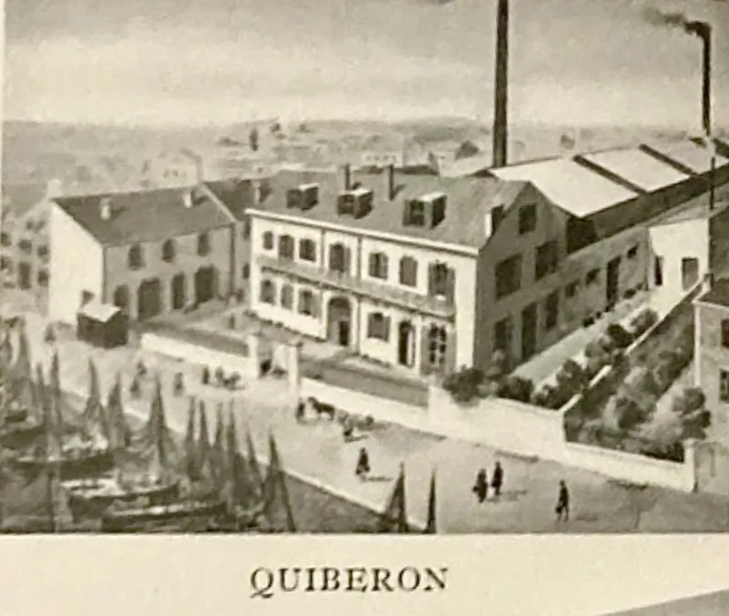
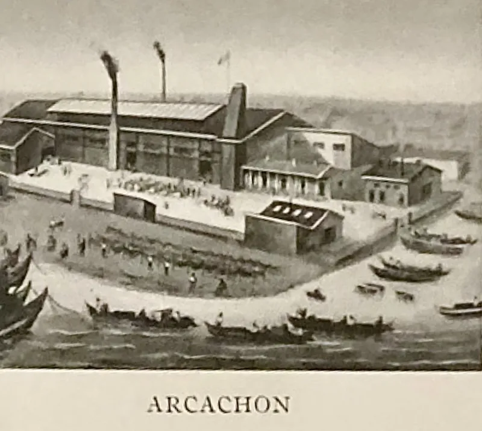
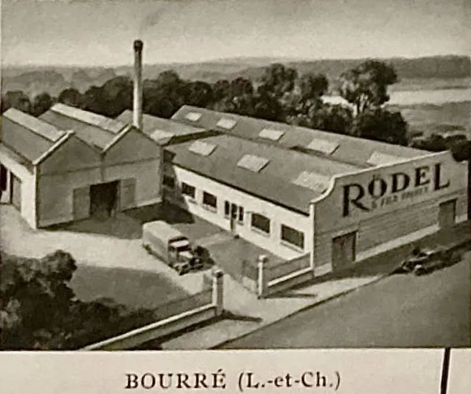
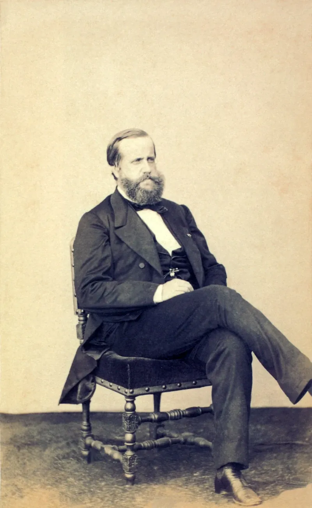
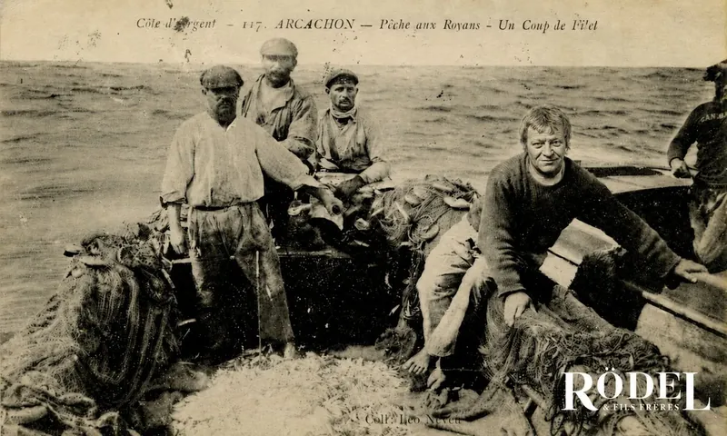
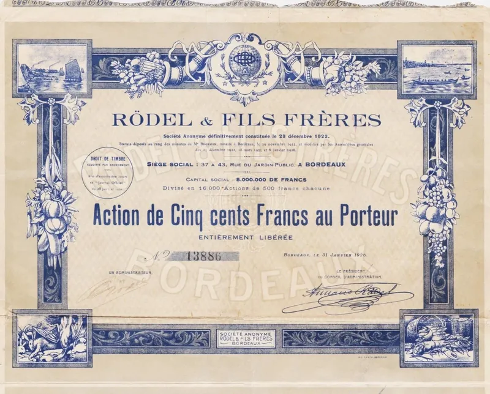

I · 1804
The invention that changed everything.
“Appertisation”
It was Napoleon Bonaparte who offered a reward to whoever could solve the problem of preserving food for his armies. Nicolas Appert (confectioner and ingenious experimenter) answered the challenge. The true inventor of food preservation, he was awarded 12,000 francs for his patent, with which he established the first cannery, La Maison Appert, in 1804 in Massy.

II · 1820–1824
Charles Désiré Rödel.
In 1820, the French Admiralty commissioned Nicolas Appert to establish a cannery in Bordeaux to provision its navy. Appert entrusted the task to his most accomplished disciple, Charles Rödel, who built the factory on the rue du Jardin Public. Founded in 1824, Rödel & Fils Frères stands today as the oldest cannery brand in the world.

III · 1843–1870
Victorine Lemoine Rödel.
When Charles passed away in 1843, his widow, Victorine, assumed leadership of the house and guided it until her death in 1870, assisted by their sons Désiré-Roger, Théodule-Désiré and Jules-Armand Rödel.
Under her direction, new factories were established in Étel, Concarneau, Saint-Yrieix and Port-Maria. Sardines were produced in Arcachon, while Bordeaux became the centre for meats and vegetables.

IV · 1850–1900
The first global brand.
Captains of merchant vessels carried Rödel preserves both for their crews and for sale in foreign ports, through which the brand acquired its international renown. By 1850, three million tins of sardines were produced in France; by 1900, that number had risen to ten million. There was a time when canned sardines were a true luxury, reserved for the most discerning tables.

V · Seventeen factories
The House of Rödel.
With seventeen factories stretching from Arcachon to Concarneau, Rödel established itself as one of France’s foremost houses of preserved foods.
Its repertoire was remarkably extensive, ranging from fine vegetables such as artichokes and asparagus, to fish and shellfish, as well as prepared dishes and game meats including larks, quail, pheasant, partridge and pigeon, not to mention tripe, cheeses, and fruits preserved in vinegar.
A Rödel factory was established in Concarneau in 1872. The beach below still bears its name, Plage Rödel: a quiet testament to the house that once stood above it.





VI · c. 1880
The House of Gourmets.
The reputation of the house rests on a singular principle: to produce the finest possible product, with cost and price considered secondary.
The company also presented itself as a supplier to the Emperor of Brazil, Lord Mountbatten, the last Viceroy of India, and Theodore Roosevelt.
This outward-looking ambition is perhaps reflected in its emblem: a globe paired with a beehive, conceived around 1880.


VII · The zenith
On the top of the world.
Under the leadership of President Armand Rödel, the founder’s grandson, and Vice-President Albert Rödel, his cousin, the house expanded still further. Rödel & Fils Frères went on to acquire the English company Crosse & Blackwell. Employing over 1,500 workers, this marked the zenith of the company’s development.
Rödel & Fils Frères increasingly turned its attention to the creation of refined delicacies, establishing itself as an internationally recognised name. Its distribution extended across the world, from the Philippines to Venezuela. The United Kingdom emerged as its foremost market, where the house maintained a close relationship with Fortnum & Mason, for whom it produced special editions.

VIII · 1934 onwards
Transformation.
Between 1934 and 1937, the economic crisis struck the company, and after four generations, leadership passed beyond the family. Laurent Jacques Rödel (1885–1968) entrusted the management to Émilien Bigeon.
From the 1980s onwards, the house withdrew from export and continued in limited production, focusing on sardines, mackerel and tuna of uncompromising quality, crafted according to exacting standards that became a benchmark for the industry.

IX · Today
Journey to the twenty-first century.
Rödel maintains a limited production in Brittany with local fishermen, crafting only the finest sardines. Today, our products are found exclusively in iconic French stores like La Grande Épicerie and Galeries Lafayette, making Rödel a name whispered among gourmets.
The brand took on an almost mythical aura, sought out in the shops of Paris by gourmets from around the world.

A myth of taste · The legend of quality
Bon appétit.